打debug还是很有必要的，以前嫌麻烦，现在觉得，通过debug可以看自己写的代码的执行的逻辑，更容易理清别人代码的逻辑。
步骤：
下载插件：
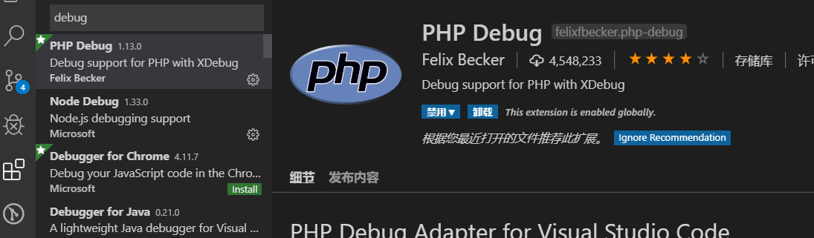
2,查看自己的php版本所需的xdebug版本
打印phpinfo，随便写个方法在浏览器访问，就可以拿到phpinfo信息
当年还是新手的时候，自己搞了半天都不知道怎么获取phpinfo信息，简直想砸电脑
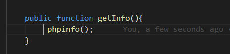
用自己配置的本地的域名，写个方法请求就可以了
以下是phpinfo的信息
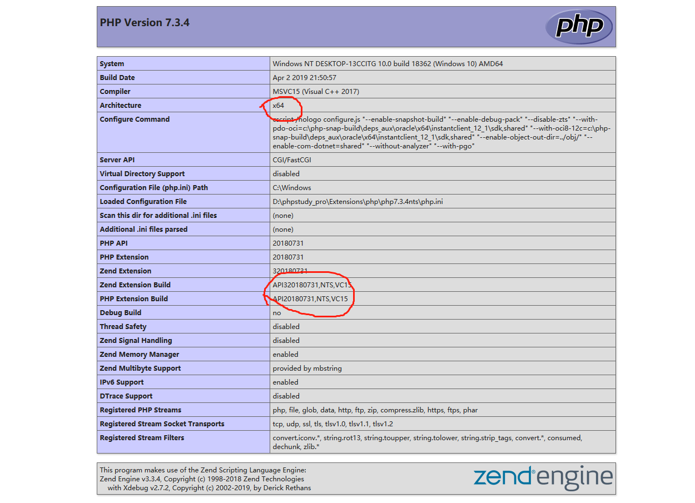
根据自己的php版本下载xdebug,我的是php7.3 ， 64位 ，线程安全版NTS
下载地址：https://xdebug.org/download.php
也可以复制phpinfo的信息检测自己需要的版本
phpinfo页面，浏览器查看源代码，复制正个页面元素信息
网址：https://xdebug.org/wizard.php
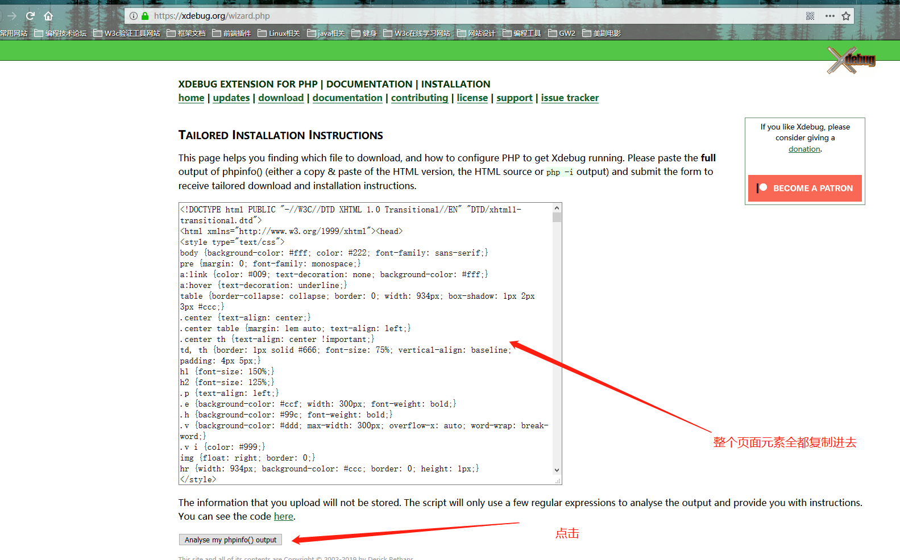
获得自己需要的版本的信息：
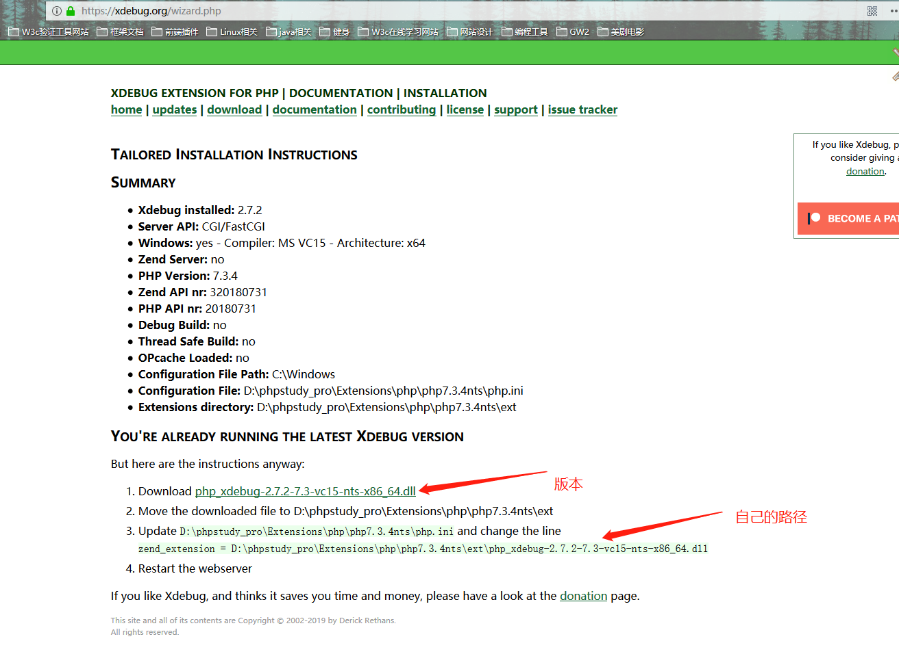
下载之后复制到php/ext下,ext是扩展文件
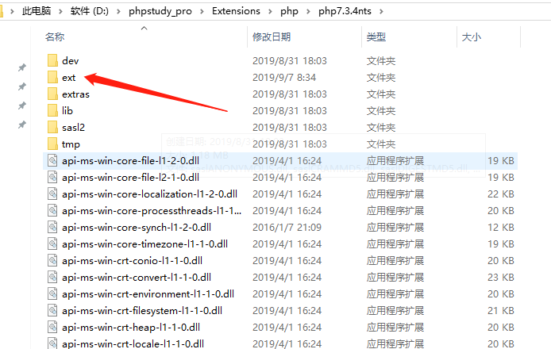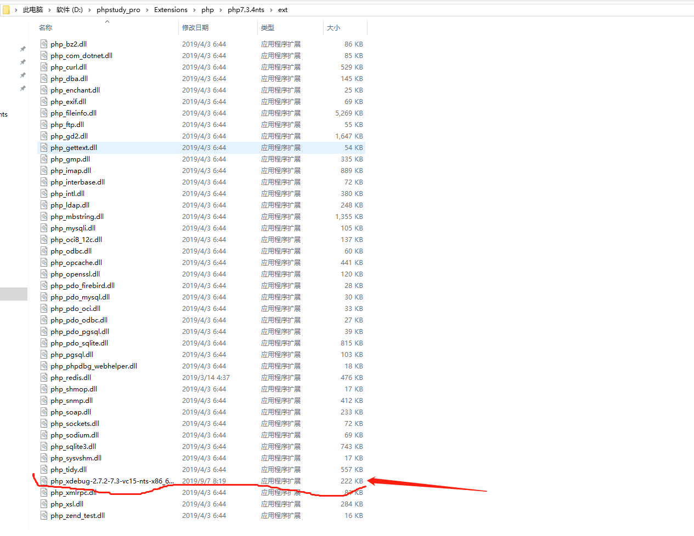
配置php.ini 通常在php/php.ini
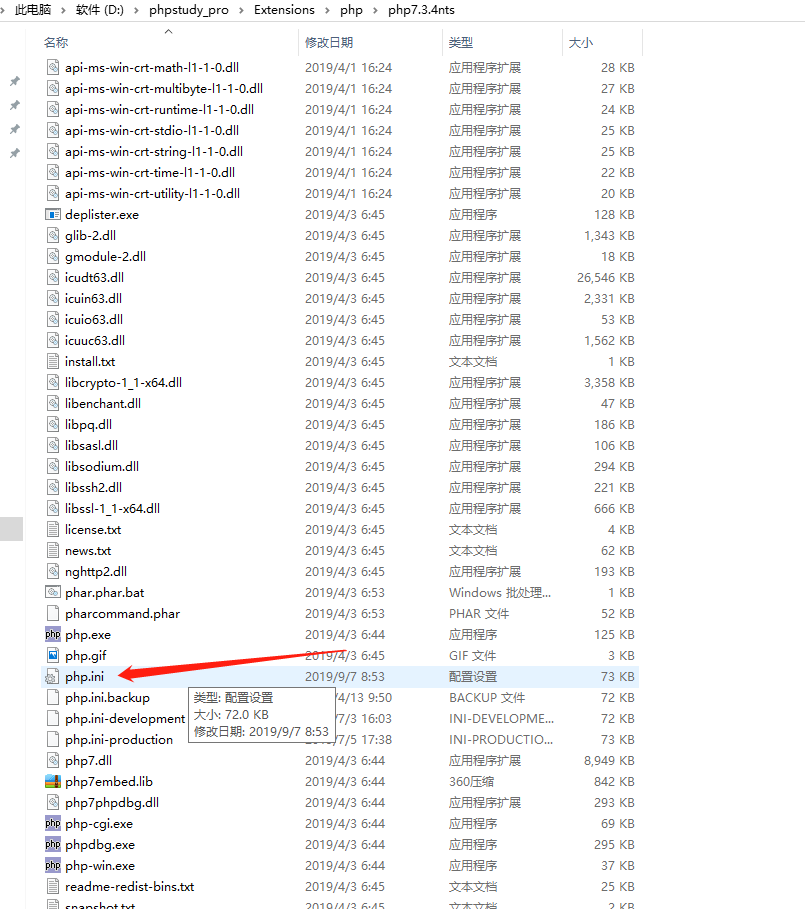
打开php.ini
在最后添加配置：
zend_extension: 填写自己的路径，后面添加自己的版本
[XDebug]
zend_extension = D:/phpstudy_pro/Extensions/php/php7.3.4nts/ext/php_xdebug-2.7.2-7.3-vc15-nts-x86_64.dll
xdebug.remote_enable = 1
xdebug.remote_autostart = 1
xdebug.remote_handler=dbgp
xdebug.remote_mode=req
xdebug.romote_host=localhost
xdebug.remote_port=9000
vscode中 phpdebug 配置：
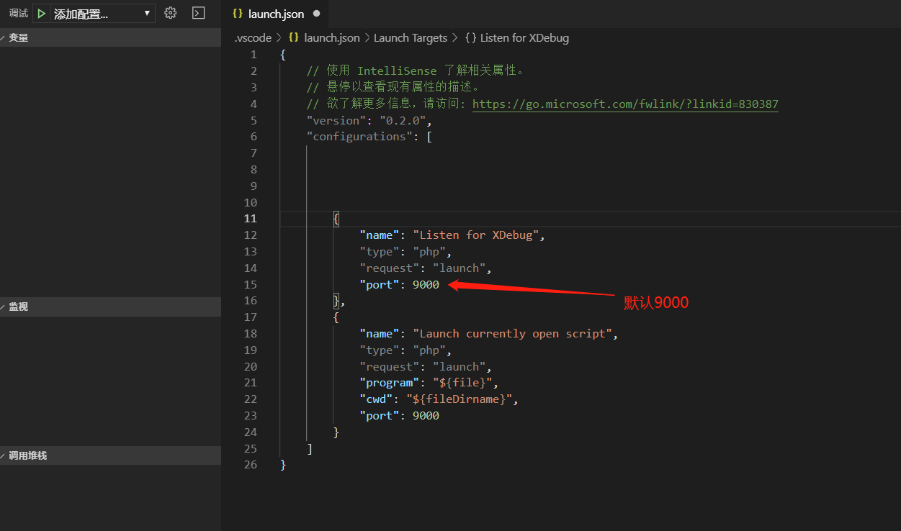
port: 默认9000对应php.ini中
xdebug.remote_port=9000
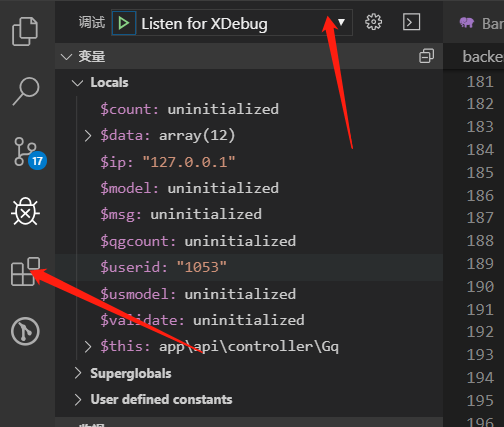
在指定的地方打断点，请求如果成功一定会在指定的地方断住，如果无效就是没有配置成功
代码写的太烂打个码，笑哭
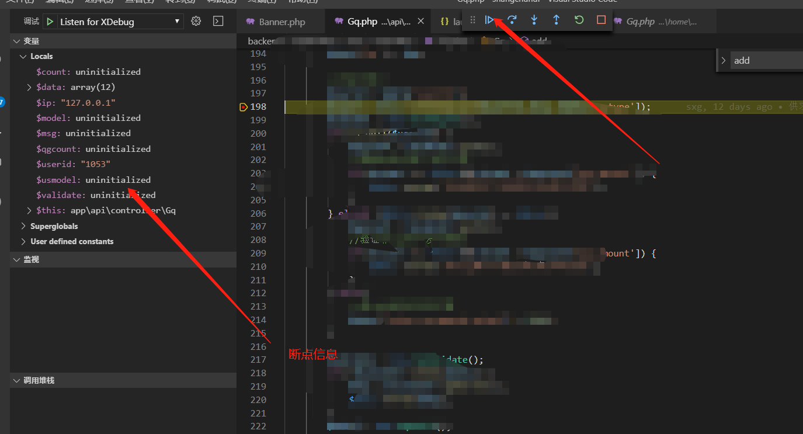